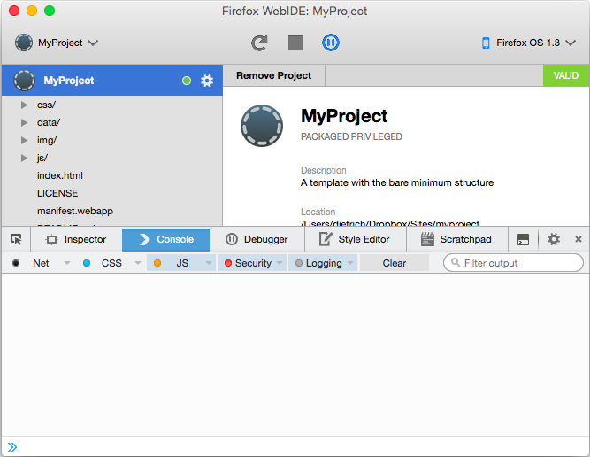
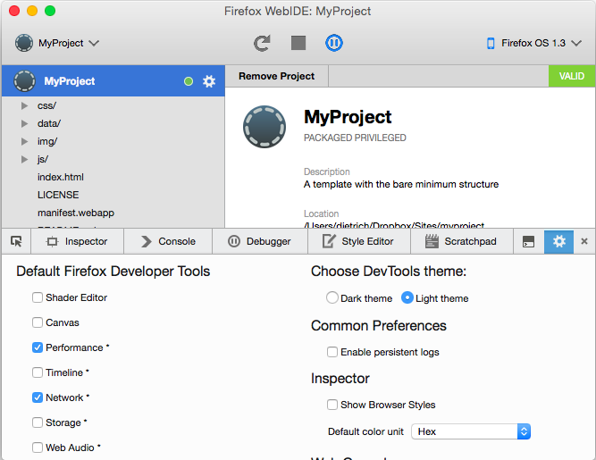
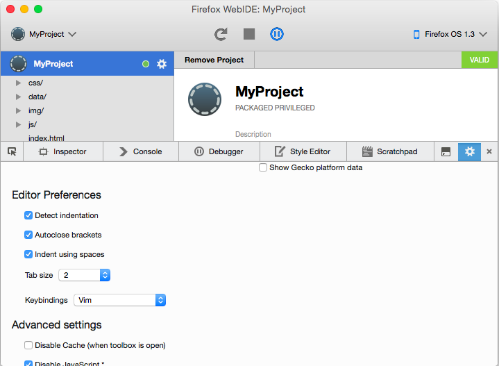
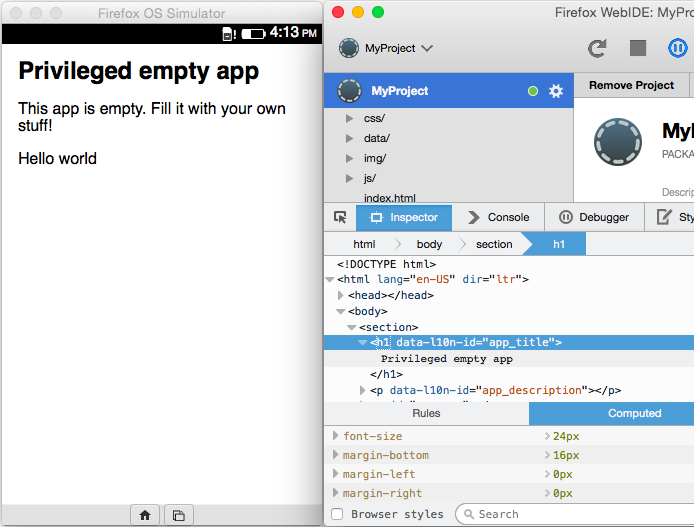
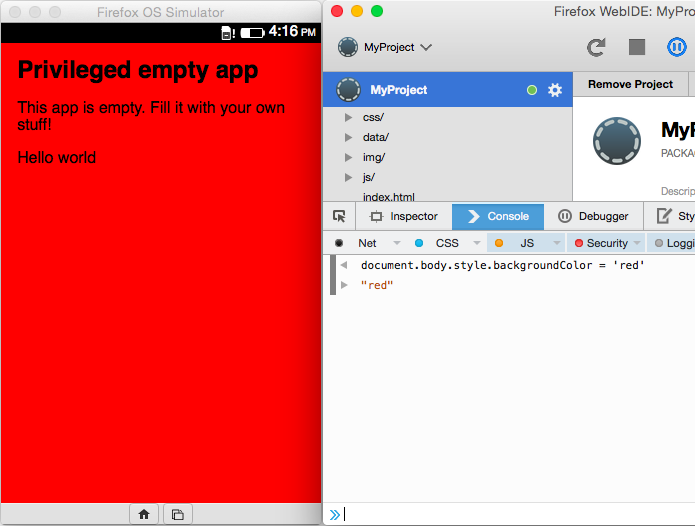
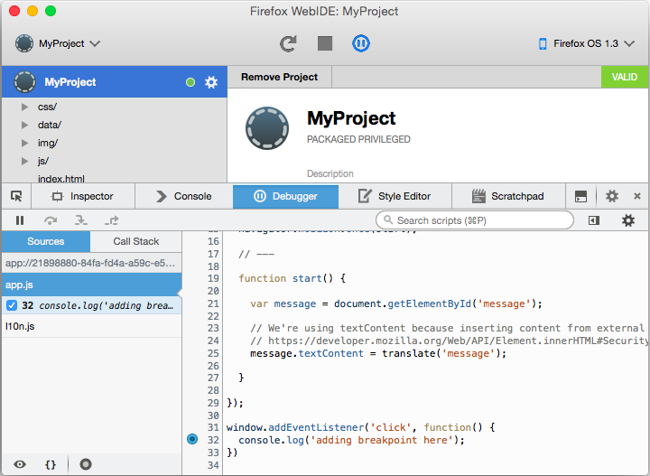
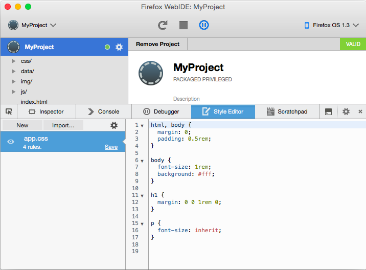
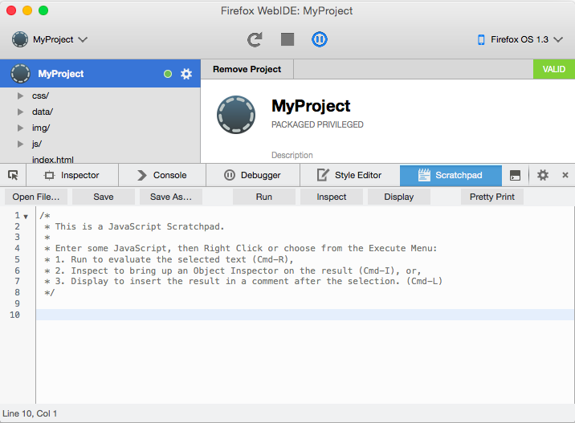

Firefox OS Intensive Workshop
Developer Environment
Dietrich Ayala,
@dietrich
or
dietrich@mozilla.com
Firefox OS - Developer Tools
Photo:
kaptainkobold
WebIDE - Debug with Developer Tools

WebIDE - Developer Tools Options

WebIDE - Editor Options

WebIDE - Inspector

WebIDE - Web Console

WebIDE - Debugger

WebIDE - Style Editor

WebIDE - Scratchpad

v1.3t: Why we can't have nice things.
128mb devices run FxOS 1.3t
Some tools not available
HOWEVER...
Doesn't mean you can't use them!
Install v2.2 Simulator...
Performance
Timeline
Network
Storage
Web Audio